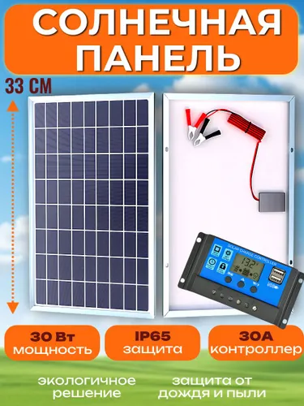

Днём панель заряжает аккумулятор, вечером лампа загорается сама — по фотореле.
Никакой пайки: все соединения на винтовых клеммах и болтах. Цены и сроки доставки — Ozon,
на 19.09.2026.
3 368 ₽весь комплект по этому списку
5 Втлампа; 6 часов после заката = 30 Вт·ч в сутки
1.4 сутавтономия на АКБ 7 А·ч в режиме 6 часов
30 Втпанель даёт 52 Вт·ч в сутки в сентябре–октябре
Есть бюджетный вариант. Если задача — просто «свет включается сам при темноте»
и бюджет до 1000 ₽, посмотрите готовые светильники на солнечной батарее
от 132 ₽ — там та же функция без сборки и за меньшие деньги.
Солнечная панель — 12 В, отдаёт ток, когда на неё падает свет.
Контроллер заряда (PWM) — держит напряжение в безопасных для аккумулятора пределах
и не даёт энергии уходить обратно в панель ночью. В выбранном комплекте панели он уже есть,
отдельно покупать не нужно.
Аккумулятор 12 В — накапливает заряд, вечером отдаёт его лампе.
Ключевая деталь для «горит, когда уходит солнце» — фотореле (или режим светоконтроля
в самом контроллере, если он его поддерживает). Фотореле ставится в разрыв плюсового провода
нагрузки и работает как автоматический выключатель по освещённости.
Схема: панель и аккумулятор идут на контроллер, контроллер отдаёт нагрузку через фотореле на лампу.
Расчёт мощностей
Исходные данные: лампа 5 Вт, темнота осенью 12 ч,
зимой 17 ч; КПД всего тракта (контроллер, нагрев, угол, пыль) 70%;
для свинцового АКБ берём разряд не глубже 50%.
1. Сколько энергии съедает лампа
Режим лампы
Сколько горит
Расход за сутки
По таймеру (рекомендуемый)
6 ч после заката
30 Вт·ч
Всю ночь, сентябрь–октябрь
12 ч
60 Вт·ч
Всю ночь, декабрь
17 ч
85 Вт·ч
Режим задаётся на контроллере (у большинства ШИМ-моделей есть «светоконтроль» и таймер
2/4/6/8 часов). Именно этот выбор делает систему на 7-амперном аккумуляторе рабочей:
за 6 часов лампа съедает 30 Вт·ч, а не 60.
2. Какая нужна ёмкость аккумулятора
Полезная ёмкость = 12 В × А·ч × 50%. «Автономия» — на сколько суток хватит
заряженного аккумулятора без всякого солнца.
Ёмкость, А·ч
Полезно, Вт·ч
Автономия, режим 6 ч
Автономия, вся ночь осенью
Автономия в декабре
7
42
1.4
0.7
0.5
12
72
2.4
1.2
0.8
18
108
3.6
1.8
1.3
24
144
4.8
2.4
1.7
3. Какая нужна панель
Считаем честно: панель 30 Вт × число «солнечных часов» × КПД тракта 70%.
Солнечные часы — это время, когда панель выдаёт близкую к паспортной мощность. Для
Санкт-Петербурга это примерно 5 ч в июне, 2,5 ч в сентябре–октябре и всего 0,8 ч в декабре.
Сезон
Соберёт за сутки
Хватит лампе на
Покрывает режим 6 ч
Покрывает всю ночь
Июнь (5 ч солнца)
105
21.0 ч
да
да
Сентябрь–октябрь (2,5 ч)
52
10.5 ч
да
нет
Декабрь (0,8 ч)
17
3.4 ч
нет
нет
Читается это так: с сентября по апрель панели хватает на режим «6 часов после заката»,
а всю ночь на 5-ваттной лампе она вытягивает только в светлое время года.
Честно про декабрь. В декабре в Петербурге панель 30 Вт соберёт всего
около 17 Вт·ч в сутки — это 3.4 часа работы лампы.
Остальное надо либо взять из аккумулятора (он начнёт постепенно разряжаться), либо дозаряжать
аккумулятор от сети раз в неделю. С марта по октябрь такой системы хватает с запасом,
летом аккумулятор будет заряжаться быстрее, чем разряжаться.
4. Токи и защита
Участок
Ток
Защита
Панель 30 Вт → контроллер
2.5 А
предохранитель 5 А в плюсовом проводе у аккумулятора
Лампа 5 Вт
0.42 А
достаточно предохранителя 2 А
Контроллер
до 10 А
берём с запасом по току и напряжению 12/24 В
Список товаров
Всё найдено на Ozon с фильтром «доставка до 7 дней» — то, что реально придёт на этой неделе.
Цены — на момент сборки страницы, они меняются каждый день.

★4.6 · 1 174 отзыва
Солнечная панель + контроллер
Солнечная панель мощностью 30 Вт, 12 В, генератор на перезаряжаемых батареях с контроллером
30 Вт, 12 В, поликристалл, в комплекте идёт ШИМ-контроллер
Склад Ozon в Ленинградской области — приезжает на следующий день
Клеммная колодка винтовая с крышкой, 8 контактов, 15 А, 600 В
119 ₽
1 дн.
Держатель предохранителя
Держатель предохранителя (разъём) флажковый с предохранителем 10А, 1 ш
99 ₽
1 дн.
Набор предохранителей
Набор предохранителей флажковых для автомобиля 10шт 7,5-30 А
61 ₽
1 дн.
Зажимы-крокодилы
Зажим "крокодил", 30 А, длина 70 мм (комплект 2 шт.) / Зажимы крокодил
107 ₽
1 дн.
Провод (минус)
Провод ПуГВ 1.5 синий медный многожильный (3м)
122 ₽
7 дн.
Провод (плюс)
Провод ПуГВ 1,5 белый медный многожильный (3м)
138 ₽
7 дн.
Итого
3 368 ₽
Сборка без пайки — по шагам
Подготовь место. Сухая полка или ящик рядом с окном/на балконе. Аккумулятор — не на
морозе и не в сырости: свинцовому AGM комфортно при 10–25 °C, на холоде он теряет ёмкость.
Разложи провода до подключения. Панель и аккумулятор должны быть отключены —
собираем «на сухую», проверяя, что провода дотягиваются до клемм.
Аккумулятор → контроллер. Сначала минус, потом плюс. Провод от АКБ зачисти на 8–10 мм,
вставь в клемму BAT и затяни винт. Никакой пайки: винтовой зажим держит
надёжнее, чем скрутка. К самому аккумулятору провод цепляется крокодилами из списка;
если клеммы АКБ плоские (как у батарей для ИБП) — вместо крокодилов удобнее взять
разъёмы «мама» 6,3 мм, комплект стоит около 97 ₽.
В плюсовом проводе от аккумулятора поставь предохранитель 5 А — держатель
с винтовыми зажимами или колодку с предохранителем. Это защита от короткого замыкания.
Панель → контроллер. Клеммы PV+ и PV−. Панель на солнце
сразу даёт напряжение, поэтому её подключают последней и обязательно с соблюдением полярности.
Лампа → фотореле → контроллер. Плюс с клеммы LOAD+ идёт на вход фотореле,
с выхода фотореле — на патрон лампы. Минус идёт напрямую с LOAD− на второй провод
патрона. Все соединения — в клеммных колодках.
Настрой режим контроллера. Кнопками на контроллере выбери режим нагрузки:
«светоконтроль» (включение по темноте) и таймер 6 часов. Если оставить «всегда
включено», лампа будет гореть и днём, а аккумулятор разрядится за одну ночь.
Пара «светоконтроль + 6 ч» — это и есть «горит, когда уходит солнце».
Проверь и включи. Убедись, что нигде нет перепутанных полюсов. Контроллер включится
и покажет напряжение аккумулятора. Прикрой фотореле рукой или накрой коробкой — лампа
должна загореться через несколько секунд. Открыл — гаснет.
Закрепи и спрячь от воды. Панель — под углом к солнцу (в Петербурге лучше
на юг и под углом ~45°), контроллер и аккумулятор — в сухом боксе, провода — в гофре
или кабель-канале.
Отключение — в обратном порядке: сначала панель, потом нагрузка, в конце аккумулятор.
Так контроллер и аккумулятор не пострадают.
Три ошибки, которые убивают систему.
Первая — перепутать плюс и минус: контроллер выходит из строя сразу, проверяй дважды.
Вторая — оставлять аккумулятор разряженным «в ноль»: свинцовый АКБ от глубокого разряда
теряет ёмкость навсегда, поэтому разряжать его больше чем наполовину нельзя, а на зиму
лучше дозаряжать от сети. Третья — ставить панель и контроллер под дождь: панель герметична,
а вот электроника и клеммы — нет.
Эксплуатация
Что
Как часто
Зачем
Протереть панель
раз в 1–2 недели
пыль и снег срезают выработку на 20–40%
Проверить напряжение АКБ
раз в месяц
ниже 11,8 В под нагрузкой — пора дозарядить
Протянуть винты клемм
раз в сезон
винтовые соединения со временем ослабевают
Дозарядить АКБ от сети
в декабре–январе
солнца физически не хватает, АКБ иначе засульфатируется
Что улучшить, когда захочешь больше
Второй такой же аккумулятор (7 А·ч) параллельно первому — тогда лампа
сможет гореть всю ночь, а не 6 часов: ёмкость станет 14 А·ч, полезно
84 Вт·ч. Соединять однотипные АКБ: плюс к плюсу, минус к минусу,
провода одинаковой длины.
Вторая панель (30+30 Вт) — вдвое больше выработки, зимой заметнее всего.
MPPT-контроллер вместо PWM — те же панели дают на 10–30% больше энергии, но дороже.
LiFePO4 вместо AGM — можно разряжать до 90%, легче и живёт в разы дольше;
дороже в 2–3 раза, но при ежедневной работе окупается.
Контроллер с режимом «светоконтроль» — тогда отдельное фотореле не нужно, но такие
модели чаще приходят с долгой доставкой.